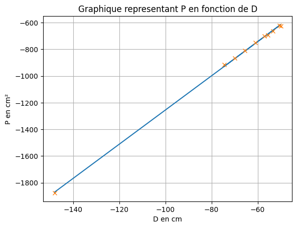
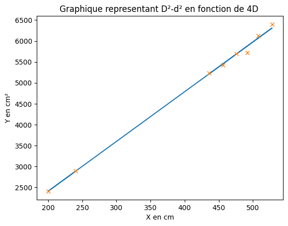

La focométrie, ou l’art de mesurer la distance focale d’une lentille, est une discipline dont le but est de caractériser une lentille. Comme tout exercice de métrologie, le secret de cet art est de maîtriser les incertitudes et de manipuler soigneusement ! Pour mesurer précisément la focale \(f'\), trois méthodes sont proposées. Pour chacune d’elles, il s’agira de discuter la précision de la mesure, mais aussi la difficulté et la rapidité de mise en place.
Les méthodes présentées utilise une lentille de vergence \(+8\delta\) (focale \(f'= 12.5\) cm). Cette valeur n’est pas fournie aux étudiants, l’objectif du TP est de la trouver.
Méthode d’auto-collimation
Matériel :
Une lampe (sans objet pour avoir un maximum d’intensité lumineuse);
Un diaphragme (avoir un trou d’environ 2mm),
un miroir plan
Mettre en oeuvre la méthode d’auto-collimation. A votre avis, quelle est l’incertitude associée à la mesure ?
Pour avoir le plus d’amplitude possible, placer la lampe à une extrémité du banc optique.
D’après la relation de conjuguaison de Descartes, les grandeurs \(L=\overline{OA}\) et \(L'=\overline{OA'}\) vérifient la relation :
\[
\underbrace{LL'}_{=P}
=f'\cdot
\underbrace{(L-L')}_{=D}
\] avec \(P\) et \(D\) correspondant respectivement au produit et à la somme de \(L\) et \(L'\). L’objet reste fixe ici. Pour différentes positions de la lentille \(L\), on ajuste la position de l’écran pour observer l’image nette, la position correspond à \(L'\).
Remarques :
Attention au signe des grandeurs, \(L<0\).
Pour que l’image existe (soit réelle), l’objet doit vérifier la condition \(L<f'\).
Mesures de \(L=\overline{OA}\) et \(L'=\overline{OA'}\) :
\(L\) (cm)
-14
-19
-24
-34
-39
-44
-49
-54
-59
\(L'\) (cm)
134
36.5
26
21.5
19.5
18
17
16.5
15.5
En traçant \(P=LL'\) en fonction de \(D=L-L'\), nous devons obtenir une droite de pente \(f'\).
Code
L = np.array([-14,-19,-24,-29,-34,-39,-44,-49,-54,-59]) # Valeur de LLp = np.array([134,36.5,26,21.5,19.5,18,17,16.5,16,15.5]) # Valeur de L'P = L*LpD = L-Lp# Regression linéaire coef = np.polyfit(D,P,1)plt.plot(D, coef[0]*D+coef[1])print(f'f={coef[0]:.02f} cm')plt.title('Graphique representant P en fonction de D')plt.xlabel('D en cm')plt.ylabel('P en cm²')plt.grid()plt.plot(D,P, 'x',label ='P=f(D)')plt.show()
f=12.82 cm

# Erreur fixe de 0.1 mmdL =0.2dLp =0.2N =10000fp_simu = [] # Liste contenant les valeurs de pentes simul%*é*)esfor i inrange(N): L_simu = np.random.normal( L, dL ) Lp_simu = np.random.normal( Lp, dLp ) P_simu = L_simu*Lp_simu D_simu = L_simu-Lp_simu coef = np.polyfit( D_simu, P_simu, deg=1 ) fp_simu.append( coef[0] )print( np.mean( fp_simu ), np.std( fp_simu ) ) # Etude statistique des pentes et affichage
12.824420527613075 0.2554059552976439
Méthode de Bessel
Matériel : - Une lampe, munie d’un objet; - Un écran
On note : - \(D\) est la distance entre l’objet et l’écran; \(D=\overline{AA'}=\overline{AO}+\overline{OA'}\) - Lorsque \(D\geq4f'\), il existe deux positions de lentille pour lesquelle l’image est nette, on les notes \(d_1\) et \(d_2\).
Placer l’écran de manière à ce que l’inégalité soit vérifiée; en pratique, placer la lampe à une extrémité du banc d’optique et l’écran à l’autre extrémité.
Chercher les deux positions \(d_1\) et \(d_2\) permettant d’obtenir l’image nette à l’écran.
La focale est alors donnée par \(f'=\frac{D^2-d^2}{4D}\), avec \(d=d_1-d_2\)
Compléter les lignes de codes suivantes.
# Indiquer les valeurs mesurées (en cm)d1 =15d2 =85D =99.5# Entrer la formule permettant de calculer f', en utilisant les noms de variables ci-dessusd = d1-d2fp = (D**2-d**2)/(4*D)print( "f'=", fp )
f'= 12.563442211055277
Estimation de l’incertitude
N =10000# Nombre de tirages aléatoiresd1_simu = np.random.normal( d1, 0.2, N )d2_simu = np.random.normal( d2, 0.2, N )D_simu = np.random.normal( D, 0.2, N )d_simu = d1_simu-d2_simufp_simu = (D_simu**2-d_simu**2)/(4*D_simu)print( np.mean(fp_simu), np.std(fp_simu) )
12.563284697552879 0.12531770595478842
Méthode de Bessel “avancée”
Matériel : - Une lampe, munie d’un objet; - Un écran
D’après la partie précédente, si \(D\) vérifie \(D\geq4f'\) alors il existe deux positions \(d_1\) et \(d_2\) permettant d’obtenir l’image nette à l’écran. La focale vérifie alors : \[4D f'=D^2-d^2\]
Pour différente position d’écran \(D\), repérer \(d_1\) et \(d_2\). Attention, \(D\) doit toujours vérifier l’inégalité
d1
13.5
13
13
13
13
13
20
16.5
d2
95
100
105
110
113
118
29.5
43
D
109
114
119
123
127
132
50
60
# Valeurs mesuréesd1 = np.array([ 13.5,13,13,13,13,13,20,16.5])d2 = np.array([ 95,100,105, 110,113,118,29.5,43])D = np.array([109,114,119,123,127,132,50,60])d = d1-d2 # Calcul de différence# Ce que l'on trace; indiquer l'expression de l'abscisse et de l'ordonnée dans ce casY = D**2-d**2X =4*D# Regression linéaire coef = np.polyfit(X,Y,1)plt.plot(X, coef[0]*X+coef[1])print('f=',coef[0])plt.title('Graphique representant D²-d² en fonction de 4D ')plt.xlabel('X en cm')plt.ylabel('Y en cm²')plt.plot(X,Y, 'x',label ='D²-d²=f(4D)')plt.show()
f= 11.89479628754272

# Erreur fixe de 0.1 mmdd1 =0.2dd2 =0.2dD=0.3N =10000fp_simu = [] # Liste contenant les valeurs de pentes simul%*é*)esfor i inrange(N): d1_simu = np.random.normal( d1, dd2 ) d2_simu = np.random.normal( d2, dd2 ) D_simu = np.random.normal( D, dD ) Y_simu = D_simu**2-(d1_simu-d2_simu)**2 X_simu =4*D_simu coef = np.polyfit( X_simu, Y_simu, deg=1 ) fp_simu.append( coef[0] )print( np.mean( fp_simu ), np.std( fp_simu ) ) # Etude statistique des pentes et affichage
11.894844052746027 0.14269901240990365
Conclusion
Comparer les trois mesures. Laquelle est la plus précise ? et la plus rapide ? Dans quel cas utiliser l’une ou l’autre ? …